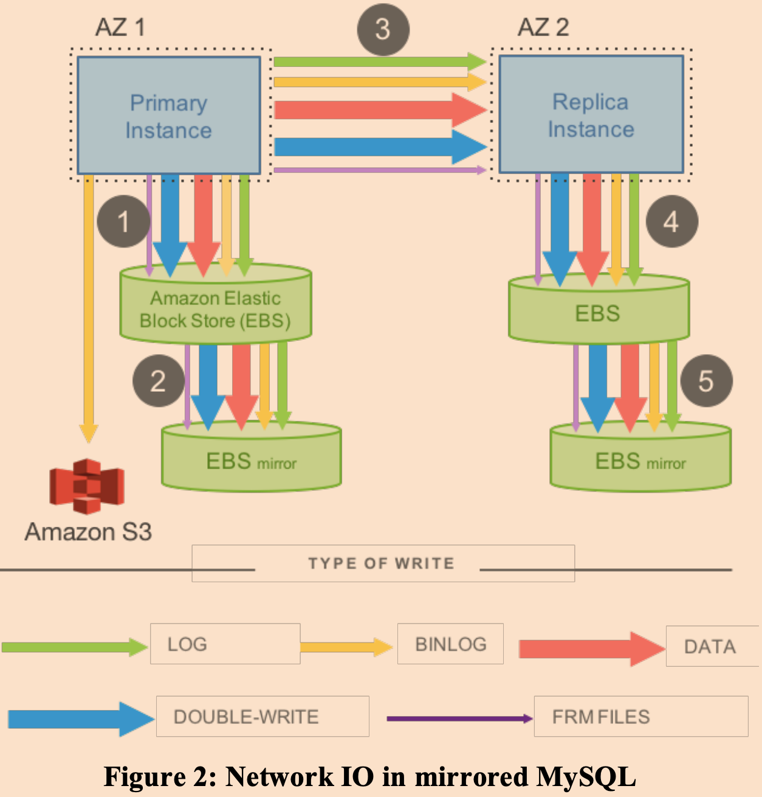

本文是在读这篇论文过程中的一些笔记，还有一些自己的思考。
因为大部分内容这篇文章已经讲的很详细，所以我会在这篇文章的基础上加上自己的思考和理解。
简介
历史背景
最初亚马逊提供了一个EC2（Elastic Compute Cloud）服务，该服务就是AWS在一台服务器上运行一个VMM（vitural machine monitor），然后在上层创建很多的虚拟机向外租售，然后客户获取存储的方式是该从服务器的一个物理挂载的磁盘上分一块存储区域使用，但是当然在用户的感知上就仿佛是自己运行的机器上的硬盘一样。
EC2非常适合那种无状态的服务，能够非常容易的通过购买更多的EC2实例来获得更多的性能。
但是也有很多用户租EC2用来跑一些有状态服务，比如数据库。此时EC2将显得不那么适合，因为像如果在EC2中跑数据库，那么数据都是存放在物理挂载的磁盘上，如果该宿主服务器宕机了，那么用户将无法访问到数据。为了解决这个AWS提供了S3（Amazon Simple Storage Service）来进行定期为EC2存储快照进行备份，但是在宕机时这种模式下可能会丢失最近一次快照之后的所有数据。
随后AWS提供了服务EBS（Amazon Elastic Block Store） ，当用户使用该服务时感知上就像本地的硬盘一样，但是实际上该服务是通过在一对服务器上使用Chain Replication实现的一个网络存储服务。此时，如果跑数据库的EC2宕机了，只需要重启一个EC2然后挂载到相同的EBS，这样就能够保证数据不丢失。
但是EBS还是有缺陷，一个是数据库写操作向EBS发送的数据太多了，这会让性能下降。此时网络通信成了性能的瓶颈所在，另一个是EBS并不能提供非常强的容错性，因为实现EBS的服务器都是放在同一个数据中心中的，如果整个数据中心因为某种原因（地震、洪水等等）失效了，那么会丢失数据。用AWS的说法来说，EBS是在同一个AZ（Availability Zone）中实现的。
如果某个区域内的某个数据中心通过低延迟可靠网络（能够容忍大部分网络错误）和同区域内的其他数据中心相连，那么这些互相连接的同区域的内的数据中心都是一个个AZ。
简化的传统单机数据库
单机数据库的磁盘中一般会以B树的形式存储数据，数据由一个个数据页组成（data page），磁盘还会存储WAL（write ahead log）。在系统中会运行数据库的软件部分会包含数据页缓存。
下面主要讨论事务以及故障恢复机制。
一个典型的事务为如下所示，假设x和y均为100：
1 | BEGIN |
事务能够保证这两个语句是原子的执行的，并且当事务向客户端返回成功表示事务提交时，应该能够保证这些变更能持久。
为了在成功执行事务之前对客户端不可见，数据库软件会锁住x和y，然后先向磁盘上的日志中写入至少三个log：
- x 100 110
- y 100 90
- commit
log中包含的信息有：修改的是那个数据、数据的旧值、数据的新值。包含旧值是为了在回滚时使用。当这些log都写入成功后，数据库就可以向客户端返回了。
如果此时没有宕机发生，那么数据库会在缓存中应用变动，最终这些变动会在被置换的时候写入磁盘（write back）。
如果此时发生了宕机，那么在数据库重启的时候，会将那些没有应用但是被提交的事务的log应用。
RDS
RDS是AWS为了解决前面提出的EBS无法保证整个AZ失效时不丢失数据不丧失可用性。
它通过在多个AZ之间进行镜像同步上面提出的EBS服务，来提高更高的容错性。每当主数据库收到一个更新操作的时候，都会将产生的IO都转发到另一个AZ中的相同配置的一套设备中，进行同步，只有等到两个AZ中的数据库都正确返回的时候，才代表该操作完成，可以向客户端返回。

因为数据库中修改操作是以页为单位（mysql为16KB）的，所以即使只修改小部分数据，还是可能会造成大量的带宽消耗，这种设计会让网络成为整个系统性能的瓶颈所在，实际使用中性能也并不理想。
Aurora的基本设计
Aurora是亚马逊公司提供的一个云原生关系型数据库服务，能够在兼容mysql协议，提供高可用性的基础上提供高吞吐量表现。
和传统的让用户在租用的机器上运行自己的数据库软件不同，Aurora是一种SaaS服务。
下面来看为了同时兼顾容错性和性能，Aurora是如何进行系统设计的。
为了提供更好的容错性，一个Aurora实例拥有6个数据副本，并且这些数据副本分散在了3个AZ中，每个AZ中2个。
乍一看好像会更慢了，因为系统的响应速度将由最慢的存储节点所决定。
而Aurora为了解决更多副本带来的性能问题，采用了如下改进：
- 只在网络中传输redo log。
- 写操作采用大多数投票机制（quorum-based voting protocol）。
因为log和数据页相比小了很多很多，所以这种设计能够更加高效的利用网络带宽。
一般来说这种底层的存储服务为了更好的复用性应该是一种通用目的的存储器，但是为了支持这种只传输log的机制，Aurora则是用了一个定制的存储服务。该服务自带了log apply，故障恢复，redo等逻辑，这不仅使得写性能提升，这还使得数据库上层软件能够变为近似无状态的服务，所以能够很快的从失效中恢复。
而对于大多数投票机制，对于一个有V个存储服务器的集群，数据库服务器无需等待所有的存储服务器的应答，只需收集到Vw个即可认为写入成功。而对于没有其他额外信息下的一个读操作，为了保证一致性，需要从读Vr个存储服务器中读取信息，这里为了保证读写的强一致性，需要保证Vw+Vr>V，且Vw>V/2，这样就能保证向读写操作发送的ACK消息的存储节点集合必有交集。Aurora中，选用Vw为4，Vr为3。
通过这种投票机制，能够让系统不用等待那些比较慢的节点，避免一些暂时的网络抖动、系统更新等等导致的延迟。
因为是数据库服务器负责生成和发送log的，所以它保存着各个存储服务器的log的状态，所以对于读操作，可以直接向那个有最新数据的存储服务器读，以此来避免等待Vr个读请求（但是当数据库宕机恢复时需要通过共识读来构建对存储服务器数据持久化状态的认知，并同时清理无用的log，回滚那些未提交事务）。
通过以上两个优化，相对于RDS，Aurora提升了35倍的写性能。
存储服务器
就目前这种实现中，该数据库能存储的数据量其实就是一台机器磁盘的大小，6个副本并没有给Aurora6倍的存储空间。
为了扩展存储空间，Aurora会将数据分片存储，存储的单位为PG（protection group），每个PG中可以有6个段（Segment）（这里的6个段和之前设定一样两两分散在三个AZ中），每个段大小为10G。

不同的PG可能会存储在不同的存储服务器上，同样的，一个存储服务器上可能存放这来自不同Aurora实例的PG。
所以当一个存储服务器宕机了，可能会影响到多个Aurora实例。
为了尽快恢复一个存储服务器实例，那么势必需要将丢失的PG副本再找新的存储服务器存一份，问题就在是再找一个新的存储服务器吗？如果是，那么如果要恢复一个存有5个PG的存储服务器，需要向某一个机器拷贝50G的数据。但是如果我们不找一个，而是找5个新的存储服务器，那么就可以并行的传输，充分的利用不同机器的带宽资源，这样重备份的过程会更快。
数据服务器另一个需要考虑的是在接收到log之后尽可能快的向客户端返回，将大量工作放到后台执行，降低响应的延迟。

具体来讲存储节点执行如下工作：
- 存储节点将主实例发送的redo日志放入内存队列，然后将日志从队列移出，持久化到磁盘（这个过程是批量操作）。
- 存储节点给主节点发送一个ACK，告诉主节点数据持久化过程已经完成。这个步骤完成以后，主实例与存储节点的交互就已经完成。从Aurora的角度看来，这两个步骤是执行路径上的关键路径，影响系统的吞吐量以及相应时间。此后的步骤与主实例的通信可以独立，异步的方式进行。
- 一旦存储节点生成日志文件，它就立刻开始整理这些日志记录以便发现它遗漏了某些日志记录。
- 运行点对点的Gossip协议，将遗漏的日志记录补上。（通过Gossip协议，它们可以知道集群中有哪些节点，以及这些节点的状态如何？每一条Gossip消息上都有一个版本号，节点可以对接收到的消息进行版本比对，确保二者得到的信息相同）。这个阶段过后，每个节点上的数据是相同的拷贝。
- 将日志记录合并，生成最新的版本的数据，转换成数据库需要的数据块。
- 以很高的频率将生成的数据块备份到S3。这个Point-in-time快照技术保证故障恢复的时候可以将数据库恢复到之前特定时间点的一致性状态。通常有两种方法保证Point-in-time快照捕捉到最近的更新。一种方法是指针重定位。当最新版本的Point-in-time快照被创建的时候，它维护一个指针指向原来的快照。另外一种方法是增量维护，只是拷贝被更改的数据。
- 运行垃圾回收机制，清理过时的数据块与日志文件。
- 定期扫描数据块，进行校验。如果发现损坏数据块，与相邻节点进行通信获取完好的数据块。这是Aurora实现可自主修复损坏数据块的关键技术。
Aurora中的后台任务的数量和前台任务的数量呈负相关。
提升读吞吐量
有很多应用读请求的数量远远大于写请求的数量。
在Aurora的设计中，所有的写请求都只能被一个数据库服务器所处理，为了让减轻它的负担，Aurora同时添加了很多（最多15个）只提供读服务的数据库服务器。
只读数据库服务器也会有数据缓存，为了更新这些缓存，主读写数据库服务器会将其所有的log转发给其他所有的只读数据库服务器（图中的水平箭头）。
为了不让只读数据库服务器向客户端暴露那些还处于事务中的中间态数据，需要使用到下面将讨论的VDL。
一致性实现
为了避免通过使用2PC的方式来实现一致性，Aurora为每个log都有一个单调增加的LSN（Log Sequnce Number），并且在数据库服务器中维护了关于各个PG的运行时状态、持久化状态，并且往往在收到来自存储服务器的ACK的时候，更新这些状态。
正因为维护了各个PG的这些状态，所以Aurora并不需要读Vr个PG的数据来决定最新的数据，而是直接根据保存的PG状态，找到一个存有最新数据的存储服务器直接进行读取。
那么什么是运行状态和持久状态呢？先介绍一些名词：
- LSN（Log Sequence Number）：每个log都有一个单调递增的LSN。
- VCL（Volume Complete LSN）：连续的log中最大的那个LSN。因为有些log之间可能因为网络等原因缺少部分log，这就导致log不连续。
- CPL（Consistency Point LSN）：提交的事务中的log中最大的那个LSN。
- VDL（Volume Durable LSN）：所有CPL中最大的且小于等于VCL那一个。
在存储服务进行恢复的时候，所有LSN大于VDL的的log都会被丢弃。只有小于VDL的数据才是真正安全返回给客户端的数据。
每个事务中最后的那一个log，会让CPL增加，当收到Vw个对于事务最后一个log的ACK的时候，会让VDL增加。
比如说在存储服务重启时，存储服务器之间通过通信得知，目前日志到1007前都已经连续的存储了（可能存在还未提交的事务），数据库服务器中保存着的各个副本的CPL，也就是成功提交的最高LSN分别为900，1000，1100，因为900<1000<1007，所以我们可以知道VDL应该是1000。
比如说在存储服务重启时，存储服务器之间通过通信得知，目前日志到1007前都已经连续的存储了，数据库服务器中保存着的各个副本的CPL，也就是成功提交的最高LSN分别为900，1000，1007。因为虽然数据库服务器可能因为网络原因还没收到1007以前所有的事务的ACK消息，但是根据VCL可以知道实际上这些log已经被接收了只是没有来得及发出ACK，所以我们可以知道VDL应该是1007（1000<1007=1007）。
正常状态下的操作
写操作
事务发起的顺序和事务的真正执行顺序可能是不同的，一个事务能够正在被认为是提交，然后能够向客户端返回需要满足：
- 收到Vw个ACK。
- 该事务前的所有的事务都已经提交。
正是因为这个机制，所以在写任务繁重的时候，pending的LSN可能远远大于VDL。为了不让pending的事务积压的过多，Aurora限制当要分配的LSN已经超过VDL一千万时，将停止创建log，等待积压的事务被消耗掉。
需要注意的是log会按照涉及的PG进行分别存储。每个段加上该段上次应用log之后收到的所有log，就是目前最近的数据。log的应用会被延后，直到收到相应的读请求。
根据每个PG中存放的这些log，可以为PG中的各个段计算出一个SCL，即各个段所连续存储的最大的那个log的LSN。通过SCL可以让存储节点从其他副本中通过gossip协议拉取缺失的log。
读操作
在Aurora中，读请求的数据是从缓存中得到的，只有当缓存中不存在对应的数据页时，才会从存储节点读取。
如果缓存已经满了，那么就要选出一个数据页置换出去，选择的标准为：只有对应的数据页中所保存的log的最大LSN大于VDL的时候，才能被置换。因为如果置换那些数据页的LSN小于VDL的页的话，接下来很可能会马上收到对应这个页的log，那么刚置换出去的数据页又得马上读回来，这是不必要的性能损失。
因为数据服务器保存着VDL，以及各个存储节点的CPL，所以如果需要从存储服务中读取数据页，只需找那些CPL≥VDL的节点即可，而收到读请求的存储节点应该只会返回对应VDL版本的数据。
因为数据库掌控了PG的持久化状态，所以其可以为每个PG都计算出一个VDL称为PGMRPL（Protection Group Min Read Point LSN），每个存储节点可以将PGMPRL前的所有log进行应用，并且垃圾回收器可以安全的将PGMRPL前的log都清理。
在Aurora一个实例中最大支持15个只读数据库。为了降低延迟所有主数据库所产生的log都会被转发给所有的只读数据库，只读数据库收到后，按照以下规则应用log：
- 只有那些LSN小于等于VDL的log才会被应用。
- 只有那些和缓存中的数据相关的log才会被应用。
- 事务的log会被原子的一起应用。
故障恢复
当数据库重启时，需要通过一次去quorum读来重建其运行时状态，当数据库对所有的PG都进行了quorum读，那么它就能计算出VDL，之后会将VDL之后的所有log都会被抛弃，同时还需要将这些被抛弃的log对应的部分提交的事务进行回滚。
更详细的看这篇文章。